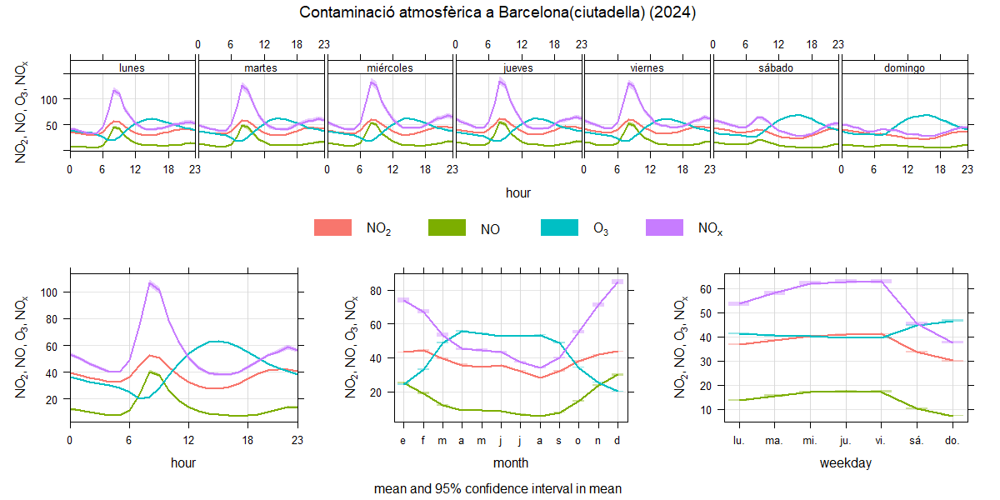

La menor contaminació durant el cap de setmana és deguda a la reducció d'activitats humanes que generen emissions. La circulació vehicular disminueix en reduir-se els desplaçaments
laborals i escolars, fet que baixa les emissions de NO2 i NOX. A més, l'activitat industrial es redueix i hi ha menys congestió urbana i contribueix a un aire més net.
Factors meteorològics i canvis en la ventilació també afavoreixen la dispersió de contaminants.